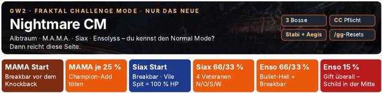
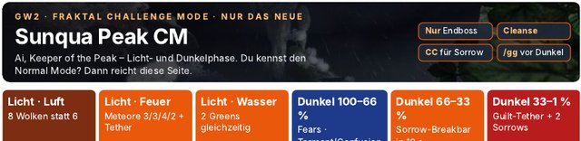
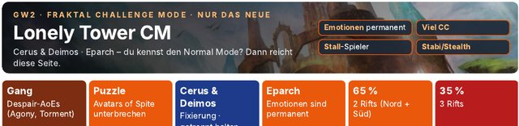
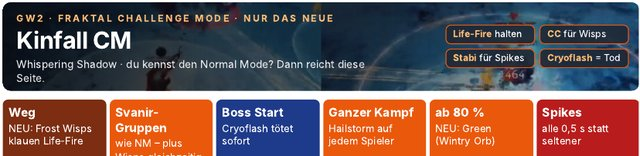

Guild Wars 2 · Guides
Fraktale
Die Challenge Modes der Fraktale (5 Spieler). Für alle, die den Normal Mode kennen: Jeder Guide beginnt mit dem, was im Challenge Mode neu ist, danach kommen alle Mechaniken im Detail und Klassentipps.

Fraktal-CM
Nightmare CM
M.A.M.A. · Siax · Ensolyss
Breakbars bei allen drei Bossen, Siax-Veteranen N/O/S/W und Ensolyss' Bullet-Hell bis zum Schild bei 15 %.
- 3 Bosse
- CC Pflicht
- Stabi + Aegis
- /gg-Resets

Fraktal-CM
Shattered Observatory CM
Skorvald · Artsariiv · Arkk
Augen-Fear, Skorvalds Anomalien und Solar Cyclone, Arkks Reaktor und die wegbrechenden Plattformen.
- 3 Bosse
- Auge = wegschauen
- Stabi
- Hypernova

Fraktal-CM
Sunqua Peak CM
Ai, Keeper of the Peak
Härtere Lichtphase mit Meteor-Wellen, Reset per /gg, dann Fears, Sorrows und Guilt-Tether.
- Nur Endboss
- Cleanse
- CC für Sorrow
- /gg vor Dunkel

Fraktal-CM
Silent Surf CM
Dolus · Kanaxai
Dread Visage wegschauen, römische Zahlen verteilen und beim World Cleaver per Grappling Hook rüber.
- Auge = wegschauen
- Spreaden
- Fallen = Tod
- Grappling Hook

Fraktal-CM
Lonely Tower CM
Cerus & Deimos · Eparch
Eparchs Emotionen bleiben, Orbs nach Farben aufteilen, Rifts bei 65 % und 35 % mit Stall-Gruppe.
- Emotionen permanent
- Viel CC
- Stall-Spieler
- Stabi/Stealth

Fraktal-CM
Kinfall CM
Whispering Shadow
Frost Wisps klauen Life-Fire, Cryoflash tötet sofort, Spikes alle 0,5 s ab 80 %.
- Life-Fire halten
- CC für Wisps
- Stabi für Spikes
- Cryoflash = Tod
Mechaniken nach den Guides von Hardstuck, Klassendaten von GW2 Wingman.